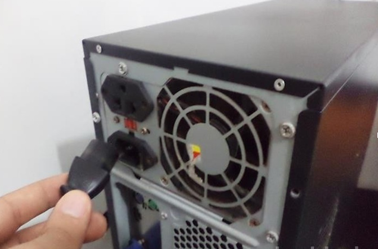

Como instalar um HD SATA extra no seu computador
Adicionar um HD SATA extra é uma boa solução para ganhar mais espaço para guardar arquivos no computador. A configuração é um caminho favorável para separar documentos, por exemplo, deixando um Disco Rígido para o sistema operacional e programas e outro apenas para arquivos pessoais.
No tutorial a seguir, confira como adicionar um HD extra no seu computador e garantir mais espaço para jogos, fotos e documentos. Também é possível armazenar outros sistemas operacionais no segundo disco.
Passo 1
Desligue o computador e desconecte todos os cabos para facilitar o manuseio do gabinete. Caso não queira, certifique-se de ter desligado pelo menos o cabo de força;
Passo 2
Abra a lateral para ter acesso a parte interna do gabinete;
Passo 3
Conecte o cabo de dados SATA em um dos plugs SATA da sua placa mãe. Estes cabos são indicados com os nomes “SATA 1, SATA 2, SATA 3 e SATA 4″. Dê preferência a plugs com numeração posterior ao do seu HD principal;
Passo 4
Posicione o HD SATA em uma das baias do seu gabinete. Dê preferência para um local onde facilite a ventilação. Não o coloque, por exemplo, logo abaixo ou logo acima do HD principal para não haver acúmulo de calor gerado pelas duas unidades;
Passo 5
Conecte os cabos de energia e dados no HD SATA extra. Caso o seu cabo de energia seja diferente, padrão IDE, pode ser necessário a troca da fonte ou a compra de um adaptador de força IDE para SATA;
Passo 6
Feche o computador e conecte os cabos na parte traseira do gabinete. Ao ligar o PC novamente, pressione a tecla “DEL” ou a tecla que ativa o menu da BIOS durante a inicialização;
Passo 7
Certifique-se de que o HD que irá iniciar o sistema operacional seja o HD que tenha o sistema operacional instalado. Pronto, agora é só aproveitar o espaço extra. O novo HD também pode armazenar outros sistemas operacionais e programas.
Ao final deste passo a passo, você adquiriu as habilidades necessárias para expandir a capacidade de armazenamento do seu computador, adicionando um novo HD SATA. A instalação bem-sucedida não apenas oferece espaço adicional para armazenamento de dados, mas também aprimora a eficiência e a organização do seu sistema. Agora, você pode desfrutar de mais espaço para seus arquivos, aplicativos e projetos sem comprometer o desempenho global do seu computador.
Lembrando sempre a importância de seguir os procedimentos de forma cuidadosa e atenta para evitar danos ao hardware.